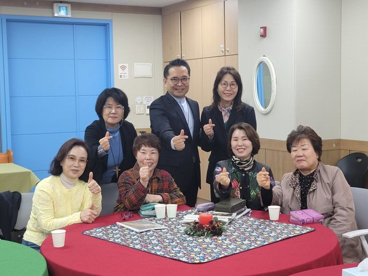
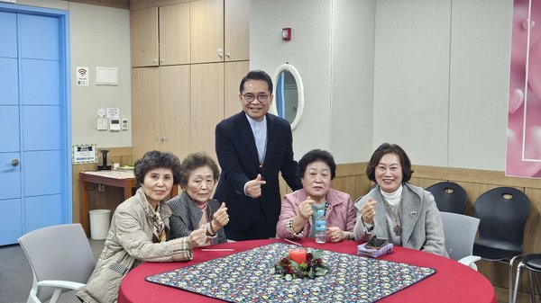
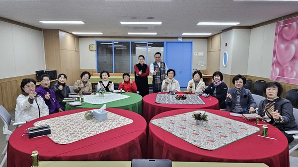
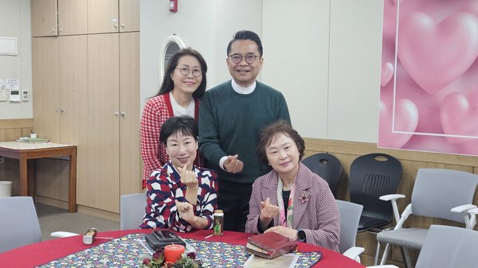

주님의흰돌교회에 처음 오셨나요?
주님의흰돌교회 새가족 등록과정을 소개합니다. 새가족 행복한 만남을 통하여 예수 그리스도와 우리 교회에 대해 배우고 헌신할 수 있습니다.
새가족 등록Welcome to GwangMyeong Church's Homepage.
GwangMyeong Church hopes you have a peaceful and graceful time with our Church.



